Šī lapa ir tulkota automātiski. Ja kaut kas neizklausās pareizi, lūdzu, dariet man zināmu.
Bejermas tehnoloģiskie tips Bridlingtonā un Austrumu padomju
Sāpes, kas raksturo telefoni, datorus un drošība tiešsaistē. Bejermas, bez nekas, ko jāreģistrē.
Vislaslas
Media Literacy Week Day 7
It's day seven of Global Media and Information Literacy Week, and today's tips are about telling adverts and fake reviews apart from genuine advice.
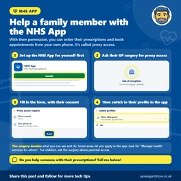
NHS App for Carers and Families
Do you help a parent, partner or family member with their health? With their permission, you can order their prescriptions and book their appointments...
Online Networking Day
Today is World Online Networking Day, which is all about making and keeping connections online. Whether you'd like to get back in touch with old...

Young People on Social Media
If you've got children or grandchildren on social media, here are some simple, free ways to help keep them safer. Most social media apps are for ages...
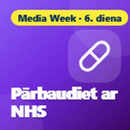
Media Literacy Week Day 6
It's day six of Global Media and Information Literacy Week, and today I wanted to talk about health information online.
Pasaupas diena
Today is World Stroke Day, so I wanted to share how to spot the signs of a stroke, and how your phone can help in an emergency.
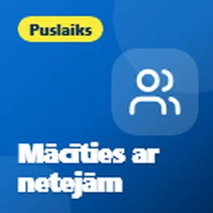
Family Learning
With half term here and October being Family Learning Festival month, I wanted to share some free apps and websites you can enjoy with the...
Media Literacy Week Day 5
It's day five of Global Media and Information Literacy Week, and today's tips are about WhatsApp forwards and chain messages.

National Databank Free SIM
Did you know there's free mobile data for people who can't afford it? The National Databank, run by the charity Good Things Foundation, gives out free...
Media Literacy Week Day 4
It's day four of Global Media and Information Literacy Week, and today I wanted to share some built-in Facebook tools that let you take more control...

What the NHS App Can Do
Tired of ringing the doctors at 8am? The free NHS App puts lots of your GP services on your phone.

Add a Bank Card to Google Wallet
Did you know you can pay with your phone instead of your bank card? Adding your card to Google Wallet means you can still pay if you've left your purse...
Media Literacy Week Day 3
It's day three of Global Media and Information Literacy Week, and today's tip is about where you get your news.
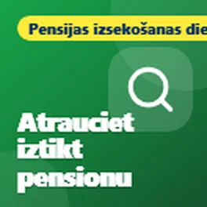
Pensijas izsekošanas diena
Today is National Pension Tracing Day, so I wanted to share some free government tools that can help you track down any pensions you may have lost...
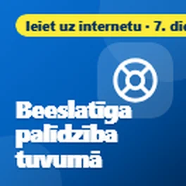
Get Online Week Day 7
It's the last day of Get Online Week, so I wanted to finish by sharing where you can get free help with technology, because you don't have to work it...
Media Literacy Week Day 2
It's day two of Global Media and Information Literacy Week, and today I wanted to share some free tools for checking whether a photo is real or made by AI.

QR Code Payment Safety
A quick warning about QR codes, those square barcodes you scan with your phone camera. Scammers stick fake ones over real ones, especially on car park...

Clocks Go Back
Just a quick reminder that the clocks go back an hour tonight, at 2am on Sunday morning. That means an extra hour in bed, but also a few clocks to check.
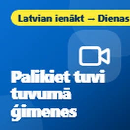
Get Online Week Day 6
It's day six of Get Online Week, and today's tips are about staying close to family and friends.
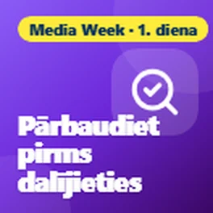
Media Literacy Week Day 1
Today is the start of Global Media and Information Literacy Week, which is all about being able to tell what's real and what's not online. With so many...
Get Online Week Day 5
It's day five of Get Online Week, and today I wanted to share some help for anyone who doesn't have a device or internet at home.

Google Storage Full
Has your phone or email told you "your Google storage is full"? Don't panic: it isn't your phone that's full. It's the free online space Google gives you.
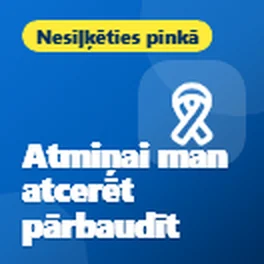
Nesiļķēties pinkā
Today is Wear It Pink day for Breast Cancer Now, so I wanted to share some free ways your phone can help remind you to check your chest regularly.
Get Online Week Day 4
It's day four of Get Online Week, and today I wanted to talk about passwords, because they're something almost everyone struggles with.
Phone Still Safe
I wanted to share a quick check you can do to see if your phone is still safe to use for things like banking and email.
Stammering Awareness Day
Today is International Stammering Awareness Day, so I wanted to share some free tech that can make life a bit easier for anyone who stammers.

Share Wi-Fi with a QR Code
When family or friends visit and ask for your Wi-Fi password, there's no need to read out a long jumble of letters and numbers. Most Android phones can...
Get Online Week Day 3
It's day three of Get Online Week, and today's tips are about free tools that help you stay safe from scams.
Phone Stolen
I wanted to share what to do if your phone is ever lost or stolen, and a couple of things worth doing now, just in case.

Reopen a Closed Web Page
Have you ever closed an important web page on your phone by mistake, like a form you were filling in or a page you needed? Don't panic, you can usually...
Switch Phone Network
I wanted to share a really easy way to switch your mobile phone network and keep your number, without having to ring up and be talked into staying.
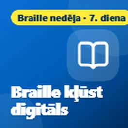
Braille Week Day 7
It's the last day of National Braille Week, so I wanted to finish with some ways technology is making braille easier to learn and use.
Get Online Week Day 2
It's day two of Get Online Week, and today I wanted to share some free places where you can learn online skills at your own pace.
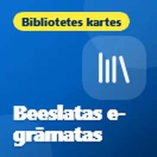
Bibliotēkas e-grāmatas
With the dark evenings drawing in, I wanted to share something lovely that a lot of people don't know about: you can borrow eBooks and audiobooks from...

Make your battery last all day
With the colder days coming in, here are a few simple ways to make your phone battery last longer, on both iPhone and Android.
Braille Week Day 6
It's day six of National Braille Week, and today's tips are for computers and laptops.

Get Online Week
This week is Get Online Week, a national campaign to help more people feel confident using the internet. Being online has become part of everyday life,...

Voice Clone Scam
I wanted to share a warning about a scam that's becoming more common: phone calls using a copy of a family member's voice.

Braille Week Day 5
It's day five of National Braille Week, and today I wanted to share how you can control your phone using just your voice.
Dyspraxia Day 7
Šis ir Disfraktijas apzinātības nedēļas pēdējais dienas, un esmu vēlējies beigt to dalījot palīdzību adulciem un studentiem, jo disfraktija nebeidzas...

Landline Switchover
Esmu vēlējies dalīties ar kaut ko svarīgu jebkuram, kuram ir personālais lauks, piemēram, pusaudis vai slēgšanas lauks, kas darbojas caur jūsu mājās telefona līnijas.
Braille Week Day 4
Šodien ir četrās dienas Nacionālās Brailles nedēļas, un šodienas padomi ir par grāmatām, radio un TV, ko varat izbaudīt klausoties.
Cut Your Bills
Šodien ir Starptautiskā nabadzības izskaušanas diena, tāpēc vēlos dalīties ar dažiem bezmaksas rīkiem, kas var palīdzēt samazināt platjoslas interneta izmaksas...
Dyspraxia Day 6
Šodien ir sešās dienas Dispraksijas apzināšanas nedēļas, un šodien es vēlēju dalīties ar tehnoloģijām, kas palīdz ar pārvietošanos.
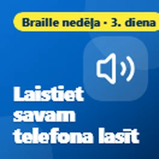
Braille Week Day 3
Šodien ir trīs dienas Nacionālās Brailles nedēļas, un šodien es vēlēju dalīties ar beesbezlāmaji veidi, kā ļaut savai telefona vai datoram lasīt lietas skaļi jums.
Dyspraxia Day 5
Šodien ir piecus dienas Dispraksijas apzināšanas nedēļas, un šodienas padomi ir visparasti par pārvietošanos.
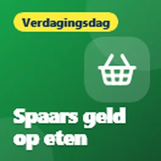
Food Apps
Šodien ir Pasaules ēdienas diena, tāpēc esmu vēlējies dalīties ar bezmaksas lietojumprogrammām, kas var palīdz jums ienaugt naudas ēdienai un novērst labas ēdienas izstrasīšanu.
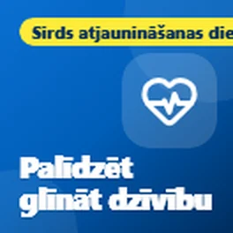
Restart a Heart
Šodien ir Sirds atjaunošanas diena, tāpēc esmu vēlējies dalīties ar bezmaksas lietojumprogrammām un vietnēm, kas var palīdz jums mācīties pirmās palīdzības (CPR) un būt gataviem palīdzēt, ja kādam sirds nebeidz.
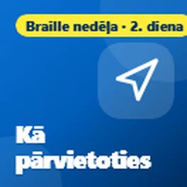
Braille Week Day 2
Šodien ir Pasaules brailles nedēļas otrā diena, un šodien ir arī Balta canes drošības diena, tāpēc esmu vēlējies dalīties ar bezmaksas lietojumprogrammām, kas palīdz cilvēkiem, kuriem ir redzības traucējumi...
Dyspraxia Day 4
Šodien ir Disfraktīvas apzinātības nedēļas četrās diena, un šodien esmu vēlējies dalīties ar bezmaksas rīkiem, kas palīdz lasīt vieglāk.

Fake Parcel Texts
Esmu vēlējies dalīties ar brīdinājumu par nepatiesušajiem paketes piegādāšanas tekstiem, jo tie ir viens no biežākajiem apdraudējumiem šobrīd.
Dyspraxia Day 3
Šodien ir Disfraktīvas apzinātības nedēļas trīsa diena, un šodienas padomi ir vēlākiem tiem, kuriem rakstīšana ir grūta.
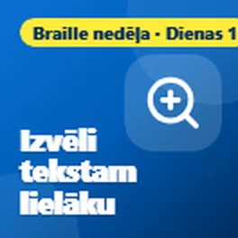
Phone Eyesight Features
Šajā nedēļā ir Pasaules brailles nedēļas, tāpēc esmu vēlējies dalīties ar bezmaksas funkcijām jūsu telefona, kas var radikāli izmaiņas, ja jūsu redzība nav tā, kā...

Old Phone or Laptop
Šodien ir Internacionā elektroniskās atkritumu diena, kas ir labs atgādinājums par visiem tie veco telefoni, tableti un noutietu datorus, kas atrodas kastēs. Lielā daļa no mums ir...
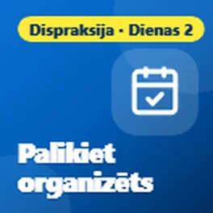
Dyspraxia Day 2
Šodien ir dusmaz nepieciešamības nedēļas, un šodien esmu vēlējies dalīt dažas bezmaksas lietas, kas palīdz organizēties.

Phone in an Emergency
Šodien ir Katastrofu riska samazināšanas ikdienas diena, tāpēc es vēlēju jums dalīt dažas funkcijas, kas var jums patiekt svarīgi palīdzēt nespējamas situācijās....
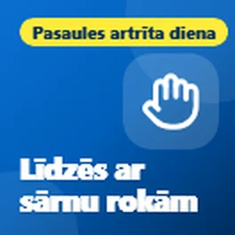
Arthritis Day
Šodien ir Artrīta diena, tāpēc es vēlēju dalīties ar dažiem funkcijām, kas var padara jūsu dzīvi ļoti vieglu, ja jums sūdzas, sūdzas vai...
Dyspraxijas nedēļa
Šajā nedēļā ir Dyspraksijas apzinātības nedēļa, tāpēc es vēlēju dalīties ar dažādiem veidiem, kā tehnoloģijas var palīdzēt bērniem ar dyspraksiju. Ideja ir izmantot tehnoloģijas, lai palīdzētu viņiem...
Sānu diena
Pasaļā veselības diena bija 10. oktobrī, tāpēc es vēlējos dalīt jums dažas vienkāršas lietas, ko jūsu telefons jau var darīt, lai jums labrāk sajūtu asiņām un bija vairāk...
Online Communities
Es vēlējos dalīt kaut ko, kas daudz cilvēku neapzinās, ka tas ir pieejams.

Find a Bad App
Pēc man pēdējā saraksta par satraucējo pop-up reklāmām, šeit, ko darīt, ja reklāmas turpināt parādīties jūsu Android telefona, pat kad jūs neizmantojat jebkuru lietotni.

Scary Pop-up Ads
Es vēlējās dalīties ar vienu padomu par tiem satraucējo pop-up reklāmām, kas dažreiz parādās telefoniem.

Sat Nav Update
Šeit ir ātrs padoms tiem, kas vēl izmanto satnavu automašīnā.
Izvēlēts Time2Volunteer balavošu premijas 2026 gadi
Es vēlējās dalīties ar nedaudz ziņojumu. Man nākama laikā izvēlēju Time2Volunteer balavošu premijas 2026 gadi par balvu, ko es veidu ar vietējo tehnoloģiju atbalstu...

Computer Safety
Es vēlējās dalīties ar dažiem padomiem par datora drošību, jo daudzi cilvēki beidzot maksā antivīrusprogrammu, kas viņiem patiešām nav nepieciešams.
Kas ir QR kodu?
Esmu vienkots padom par QR kodiem.

Heating Timers
Ar aukstāka laika pieejamība, tagad ir labā laika, lai pārbaudītu savas sildīšanas un karsta ūdens laiku laukus.

Heating Check
Ar ziemas pieejamības, tagad ir labā laika pārbaudīt savu sildīšanu, īpaši, ja to nepalikusi daudz lietotu šim gadam.
Apmeklēt padomus pēc tēmas
- Scams and staying safe (9)
- Fake news and online info (7)
- Health and wellbeing (22)
- Money (4)
- Getting online and staying connected (11)
- Ziņas (1)
- Everyday tech (14)
Tie, ko cilvēki saka
Liels paldies, kungs
Jā, noteikti noderīgi, paldies. Es dalīšos ar ikvienu, kam, manuprāt, jūsu padomi noderētu 😃
Noderīgi, paldies
Saņemiet jaunus padomus e-pastā
Īss e-pasts, kad publicēju jaunu padomu. Bez maksas, un jebkurā laikā varat atteikties.
Jūs saņemsiet e-pastu apstiprināšanai. E-pastus sūta follow.it, un katrā ir saite, lai atrakstītos.